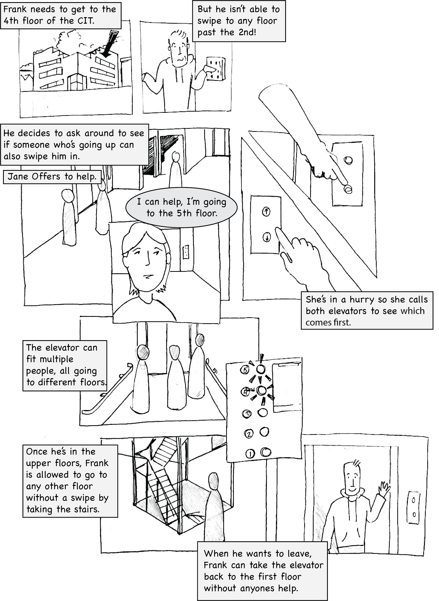

Background
The elevators in the CIT transport people to different floors while also preventing people without the proper permissions from getting to certain floors. Unfortunately the elevators and their interfaces have become dated, causing confusion. This creates delay times and students may sometimes
end up on a floor the didn’t intend to. A group of other students and I decided to research adn better understand the problem. We created a series of Personas to reflect our findings. I also contributed the illustrations.
Research
After observing students interact with the elevator in a variety of scenarios and conducting a series of interviews from a wide array of demographics, we consolidated our findings to these key observations.
- Users will often call all the elevators all at once.
- Users will abandon elevators after calling them, causing them to go to floors with nobody waiting.
- Users fail to swipe their access card quick enough to get to a restricted floor, causing the elevator to go to a differnet floor where someone else is waiting.
- Users often develop a superstitious routine for how to get the elevators to come quickly.
Models
Based on our observations, we created two mental models of how user beleive the elevator operates.
- “The elevator will come to my floor after it completes its last task, just like other elevators. The elevator appears to be the only way to get to the upper floors from the lobby, so I should just wait for it like everyone else is doing.”
- “The elevator that is closer to my current floor will probably come first, but probably not if I see that it is going in the wrong direction. The elevators are slow in general and the swipe access interface and buttons are unreliable, so I don’t necessarily expect them to work the first time.”
Personas
Follower Frank
Frank is a freshman in computer science who is new to the CIT, and rarely needs to visit the upper floors. Today he needs to get to the third floor for a seminar with other students. Frank doesn’t have access to all the floors and the buttons provide no indication as to whether or not he can go there. He wants to make it to his seminar at the same time as other students so that he does not disrupt it by walking in alone. If Frank is calling the elevator with others, his decisions will be influenced and his interactions with the interface are limited.
Thinks
|
Feels
|
Says
|
Does
|
Jaded Jane
Jane is an upperclassman Computer Science concentrator who has used the CIT elevators many times and knows that they can be unreliable. Today she needs to get to the fifth floor for a weekend meeting with other students and is already running 5 minutes late. Jane must decide whether she wants to summon both elevators, and if it is a busy day, whether or not to squeeze into an already packed elevator. If someone else enters the elevator afterwards, she is also unsure if she needs to swipe her card again for the other person. The elevator also does not clearly inform Jane which floor it stops on. If she isn’t paying attention, she may mistakenly get off at an earlier floor.
Thinks
|
Feels
|
Says
|
Does
|
Storyboard
Conclusion
Working through the personas has allowed me to separate out my own feeling about a certain design or interface and take an empathic look at the product from multiple view points. By constructing personas, I can design certain elements for specific users of various demographics and experience levels, rather than just for myself. Drawing a storyboard with said personas also helps distance my own biases from the project by letting me walk through a specific scenario before even having a complete product. I can look for potential bottlenecks or points of confusion in the current iteration of the interface, before they come up in development.